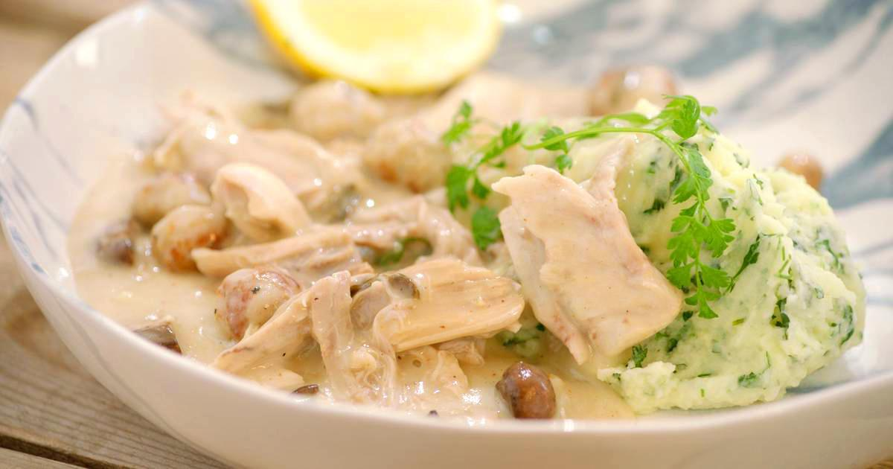

Vol-au-Vent

Chicken and Mushroom Vol Au Vent is the perfect comfort food. Originating from France, Vol Au Vent is a hollow puff pastry shell which can be filled with all kinds of sweet and savoury combinations. Today, I am using a creamy chicken and mushroom filling that is seasoned with tarragon and Italian herbs.
Ingredients
- 100g boneless chicken, cut in small cubes
- 200g white mushrooms
- 1 tbsp butter
- 1 tspn olive oil
- 1 clove garlic, minced
- 2 tbsp onion, chopped
- 1/2 tspn crushed black pepper
- 1 teaspoon Italian herbs
- 1/2 tspn dried tarragon
- salt
- 1 tbsp flour
- 1/2 cup cooking cream
- puff pastry shells
Steps
- Cook the chicken first with a pinch of salt and white pepper. Remove from pan and keep aside.
- Then in the same pan add the olive oil and butter. Saute the garlic and onion till no longer raw.
- Then add the mushrooms and fry till golden.
- Add the cooked chicken and all the spices. Stir.
- Pour in cooking cream and sprinkle the flour on top. Keep mixing as the cream will start to thicken.
- Turn off heat and keep aside to cool.
- Take a frozen puff pastry sheet (don't thaw it) and cut rounds out of it. I used a cutter with 5 cm/2 inches diameter. On a baking tray lined with parchment paper place these rounds with distance between them. This is the base of the vol au vent shells.
- Then cut some more rounds of the same size and by using a slightly smaller cutter (mine was of 3.5cm/1.25 inches diameter) cut out the inner portion so you are left with an outer ring. If you have 10 bases you need 20 outer rings. 2 outer rings for each puff pastry base.
- Brush the bottom base with egg wash, place one outer ring on the edges. Prick the middle of the base 2-3 times to prevent that area from puffing up. Then brush some egg wash, place the second ring. Give a final brush of egg wash and repeat for all rounds.
- Refrigerate these pastries for 15 mins.
- Bake in a pre-heated oven at 200 °C (400 °F) for 15-20 mins until golden and puffy.
- Take out and spoon some of the chicken and mushroom filling inside.
- Garnish with chives and serve.